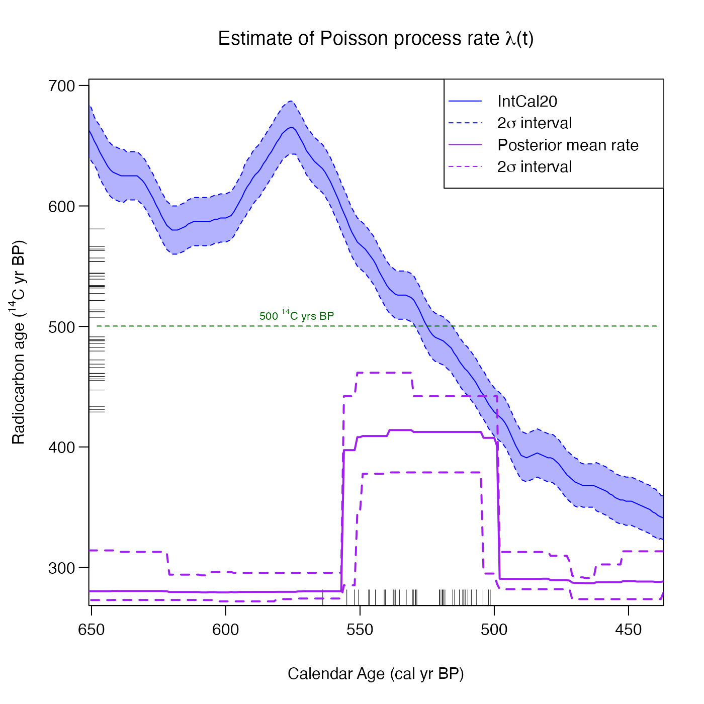

Having plotted the output of the various modelling approaches, add text annotation at a given location on the plot. It is based on the base text function
This function/annotation can be applied after having called any of PlotPosteriorMeanRate, PlotPosteriorChangePoints, CalibrateSingleDetermination, PlotPredictiveCalendarAgeDensity, PlotCalendarAgeDensityIndividualSample, or PlotRateIndividualRealisation.
Usage
AddTextPlot(
output_plot,
x,
y,
labels,
adj = NULL,
pos = NULL,
offset = 0.5,
vfont = NULL,
cex = 1,
col = NULL,
font = NULL
)Arguments
- output_plot
The plot onto which you wish to add text
- x, y
numeric vectors of coordinates where the text
labelsshould be written. If the length ofxandydiffers, the shorter one is recycled.- labels
a character vector or expression specifying the text to be written. An attempt is made to coerce other language objects (names and calls) to expressions, and vectors and other classed objects to character vectors by
as.character. Iflabelsis longer thanxandy,labelsis truncated tomax(length(x), length(y)).- adj
one or two values in \([0, 1]\) which specify the x (and optionally y) adjustment (‘justification’) of the labels, with 0 for left/bottom, 1 for right/top, and 0.5 for centered. On most devices values outside \([0, 1]\) will also work. See below.
- pos
a position specifier for the text. If specified this overrides any
adjvalue given. Values of1,2,3and4, respectively indicate positions below, to the left of, above and to the right of the specified(x,y)coordinates.- offset
when
posis specified, this value controls the distance (‘offset’) of the text label from the specified coordinate in fractions of a character width.- vfont
NULLfor the current font family, or a character vector of length 2 forHersheyvector fonts. The first element of the vector selects a typeface and the second element selects a style. Ignored iflabelsis an expression.- cex
numeric character expansion factor; multiplied by
par("cex")yields the final character size.NULLandNAare equivalent to1.0.- col, font
the color and (if
vfont = NULL) font to be used, possibly vectors. These default to the values of the global graphical parameters inpar().
Examples
# NOTE: This example is shown with a small n_iter and n_posterior_samples
# to speed up execution.
# Try n_iter and n_posterior_samples as the function defaults.
pp_output <- PPcalibrate(
pp_uniform_phase$c14_age,
pp_uniform_phase$c14_sig,
intcal20,
n_iter = 1000,
show_progress = FALSE)
# Default plot with 2 sigma interval
posterior_mean_plot <- PlotPosteriorMeanRate(
pp_output,
n_posterior_samples = 100)
# Add horizontal green dashed line
AddLinePlot(
posterior_mean_plot,
h = 500,
col = "darkgreen",
lwd = 1,
lty = 2)
# Add text to annotate line
AddTextPlot(posterior_mean_plot,
x = 575, y = 500,
labels = expression(paste("500", " "^14, "C ", "yrs BP")),
cex = 0.7,
pos = 3,
offset = 0.2,
col = "darkgreen")
